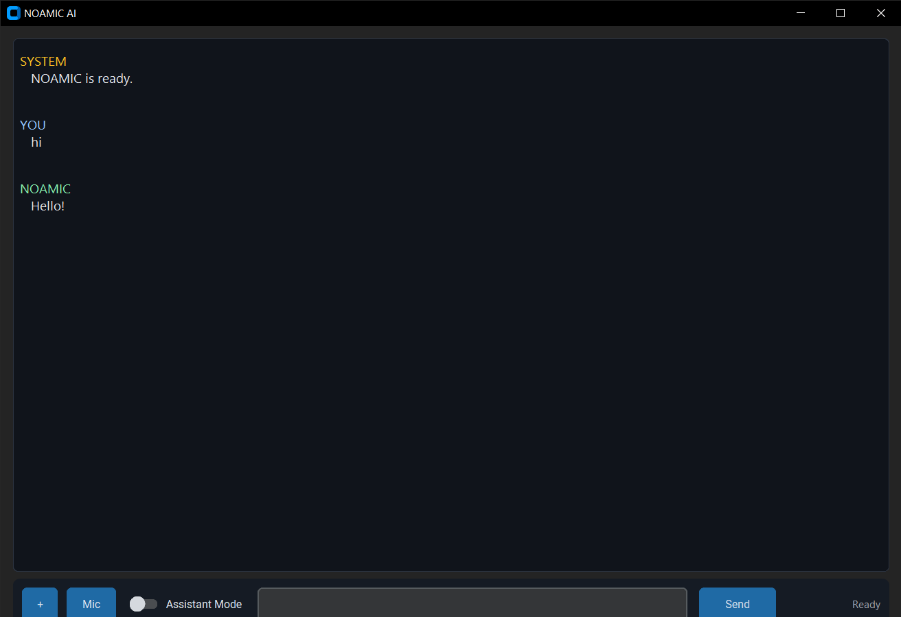
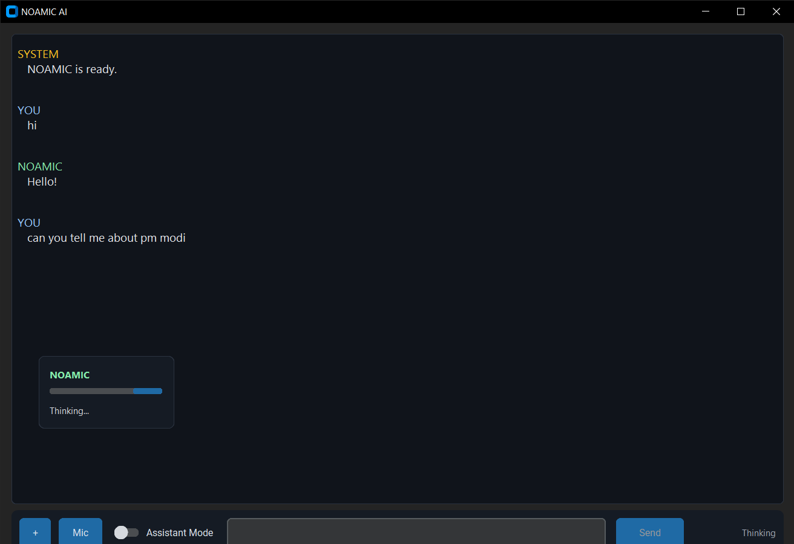
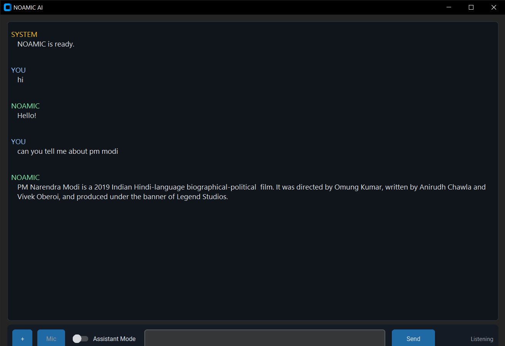

◉
Desktop-first
A dedicated Windows interface keeps the assistant close to the tools and actions you use every day.
NOAMIC AI is a free, experimental desktop agentic AI project built to explore a different kind of AI experience — one that can chat, listen, speak, remember context, perform local actions and help you work from your own computer.
NOAMIC is designed as a desktop companion — a personal layer between you, your computer and AI services.
A dedicated Windows interface keeps the assistant close to the tools and actions you use every day.
Use the microphone for voice input and let NOAMIC respond with speech. Assistant Mode explores a more continuous interaction model.
Local commands, voice components and app logic are designed to keep useful parts of the experience on your PC; advanced AI responses can require an internet connection.
The project explores autonomous semantic-agent ideas: interpreting intent, combining local actions with AI responses, maintaining context and becoming a more useful personal computer companion.
NOAMIC can work with desktop-oriented actions, including opening YouTube and navigating to a particular video the user asks to watch, where the configured local actions support it.
A small selection of images generated with NOAMIC AI. These examples are included to show the creative side of the project.


The current interface makes system state, user input and NOAMIC's response visibly distinct — with listening and thinking states rather than a generic chat bubble wall.



NOAMIC is not limited to one experiment. The ecosystem also includes NOAMIC Spreadsheet — an AI-powered spreadsheet project.
NOAMIC AI v1.0.0 is the first public release. Want a more advanced version or collaboration? Contact us.